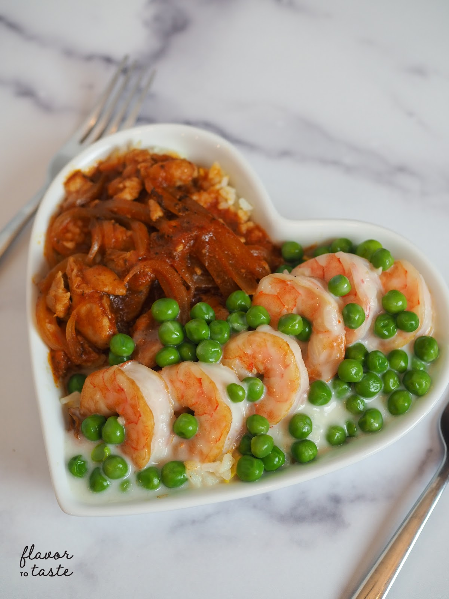

Yin Yeung Fried Rice
February 15, 2021 by Mandy

Ingredients
Fried Rice:
- 2-3 cups of cooked white rice (prepared the day before is best so the rice isn't soggy)
- 2 eggs, whisked
- 1 tsp salt
- 1 tbsp olive oil
Red Sauce:
- 1/2 tsp olive oil
- 1 chicken breast
- (Marinated with 1 tbsp soy sauce, 1 tsp oyster sauce, 1 tsp sesame oil)
- 1/2 yellow onion, sliced thinly
- 2 tbsp tomato paste
- 1 tsp sugar
- 1 cup of chicken stock
- Salt to taste
Creamy Sauce:
- 1/2 tsp olive oil
- 6-8 medium sized shrimps
- 1/4 frozen green peas
- 2 tbsp heavy cream
- 1 cup chicken stock
Directions
- Marinate the chicken breast for 15 minutes.
- Heat up a wok with 1 tbsp olive oil on medium heat.
Add whisked egg and let it pan fry like an omelette.
- While the egg is halfway cooked, add rice. Mash rice down
with a ladle so it doesn’t break the rice into small pieces.
Continue mashing and spreading around the wok in clockwise
circular motions. Slide a spatula down the side of the wok
and underneath the rice and continue this motion until the
egg and rice is well incorporated. Allow the rice to continue
cooking a couple of minutes for a crunchy crust effect. Set
aside in a deep plate that can contain sauces.
- For the red sauce: in a new pan, saute the onions until
fragrant and add chicken breast to sear. Once the chicken is
nicely browned, add chicken stock and tomato paste. Add sugar
and flavor to taste with salt and pepper. Turn off heat and
add cornstarch slurry to thicken up sauce.
- For the creamy sauce: sear the shrimps until they are mostly
cooked. Set aside. Heat up the chicken stock. Once it boils
add the cooked shrimp, green peas, and cream. Season with salt
and pepper. Turn off heat and add cornstarch slurry to thicken
up sauce.
- Make a divider using aluminum foil and run it down the middle
of the rice. Spoon both sauces to each side and finish up by
taking out the foil.